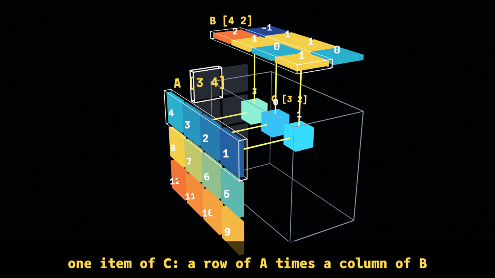
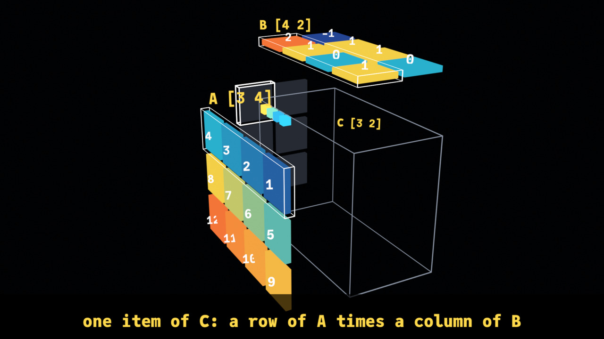
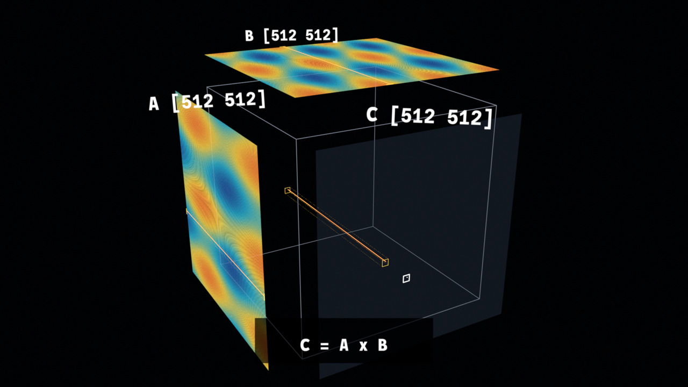
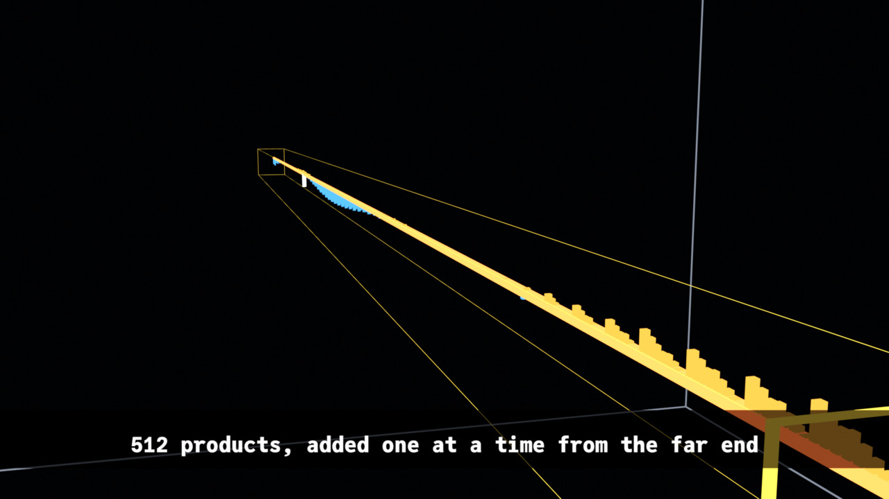
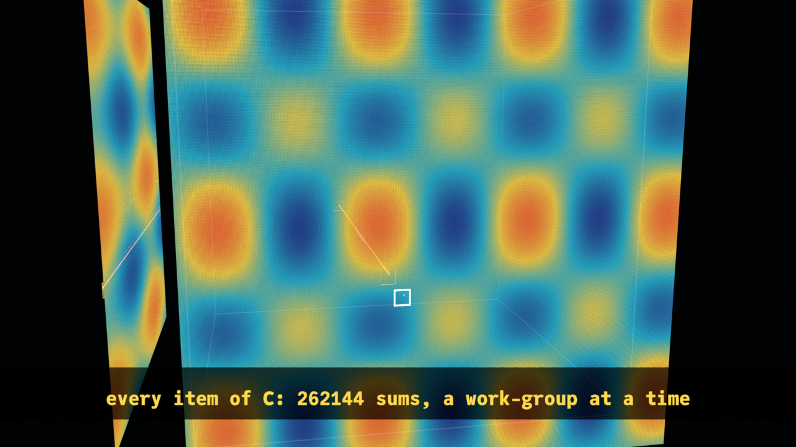

Matrix multiply, arrays to video
one product a step at a time, then 134 million of them as a fly-through, from X_eTaL arrays to Python to Blender to an MP4
Table of Contents
A matrix product is the work a GPU does most: in a neural network's layers, in attention, in graphics. C = A x B takes a row of A and a column of B, multiplies them item by item and adds the products up – one item of C – for every row and every column. This document shows two videos of it, made from X_eTaL arrays: a small product a step at a time, and a large one as a 3D construct the camera flies through, and how every part of both comes from X_eTaL.

Purpose: what the videos show, and why
X_eTaL-gpu compiles X_eTaL to run on Apple and NVIDIA GPUs; its Accel
library's ac:m_atmul is X_eTaL's inner product, '+ '* i_nner, and
a GPU runs it as one work-item per item of C, in work-groups of 16 by
- The videos show what that means:
- A step at a time (15.5 s): X_eTaL-gpu's matmul demo, A [3 4] times B [4 2]. A stands on the left wall, B on the ceiling, C on the back wall, and the cube between them is every product. Item by item a row of A and a column of B light up, their four products appear in the cube with lines from their two factors, fly into C's item and become its sum. The first item is slow, the next quicker; then all six light at once – on a GPU every item is a work-item of its own.
- At scale (18 s): the same construct for 512 by 512 matrices: 262,144 cells a wall, 134 million multiply-adds in the cube. The camera starts far out to show the scale, flies to one work-group's 16 by 16 tile of C and the rows and columns it reads, then to one work-item: its 512 products stand as bars along a beam through the cube, and a running sum moves from the far end to the near, where it becomes one item of C. Then C fills in, a work-group at a time.
The point is the shape of the work: which items each result needs, how much there is, and how a GPU divides it up.
The chain: X_eTaL, Python, Blender, video
As in ReLU and softmax, arrays to video, nothing in the chain is written by hand for these videos:
- X_eTaL works out the arrays: A, B, and C by X_eTaL-gpu's Accel
ac:m_atmul(pinned atGPU_COMMIT). - X_eTaL works out the videos:
extensions/blender/demos/Matmul.xtlandMatmulFly.xtlturn them into places, colors, keys, spans, the camera's path and the captions – the only part made for these videos. - X_eTaL writes the Python: the blender extension's
Video.xtlturns each table into one call of its player, every number written out. - Blender runs it:
bl:r_un!runs Blender in the background; the player makes the objects and keys and EEVEE renders the MP4.
1. The arrays, by Accel
ᵐᵐ⁼u̲se< "Matmul" ᵃᶜ⁼u̲se< "Accel" ᵛᵈ⁼u̲se< "Video" ᵐᵐa ⍝ typed: ⍝ "mm:" u_se< "Matmul" ⍝ "ac:" u_se< "Accel" ⍝ "vd:" u_se< "Video" ⍝ mm:a
1 2 3 4 5 6 7 8 9 10 11 12
ˡa ← 3 4 r̲eshape r̲ange 12 ⍝ typed: ⍝ l:a := 3 4 r_eshape r_ange 12
ˡb ← 4 2 r̲eshape 1 0 0 1 1 1 2 -1 ⍝ typed: ⍝ l:b := 4 2 r_eshape 1 0 0 1 1 1 2 -1
ˡc ← ˡa ᵃᶜm̲atmul ˡb ⍝ typed: ⍝ l:c := l:a ac:m_atmul l:b
ᵐᵐb ⍝ typed: ⍝ mm:b
1 0 0 1 1 1 2 -1
ᵐᵐc ⍝ typed: ⍝ mm:c
12 1 28 5 44 9
2. Every product, one at a time
C's six items are worked out in order, row by row; each needs four products, so the video has 24. For each product the library works out which item it belongs to and its i, j and k, as arrays:
ˡitemI ← ((r̲ange 6) − 1) d̲iv 2 ⍝ typed: ⍝ l:itemI := ((r_ange 6) - 1) d_iv 2
ˡitemJ ← ((r̲ange 6) − 1) m̲od 2 ⍝ typed: ⍝ l:itemJ := ((r_ange 6) - 1) m_od 2
ˡprodQ ← ((r̲ange 24) − 1) d̲iv 4 ⍝ typed: ⍝ l:prodQ := ((r_ange 24) - 1) d_iv 4
ˡprodI ← (ˡprodQ + 1) s̲elect ˡitemI ⍝ typed: ⍝ l:prodI := (l:prodQ + 1) s_elect l:itemI
ˡprodJ ← (ˡprodQ + 1) s̲elect ˡitemJ ⍝ typed: ⍝ l:prodJ := (l:prodQ + 1) s_elect l:itemJ
ˡprodK ← ((r̲ange 24) − 1) m̲od 4 ⍝ typed: ⍝ l:prodK := ((r_ange 24) - 1) m_od 4
ᵐᵐprodI ⍝ typed: ⍝ mm:prodI
0 0 0 0 0 0 0 0 1 1 1 1 1 1 1 1 2 2 2 2 2 2 2 2
ᵐᵐprodK ⍝ typed: ⍝ mm:prodK
0 1 2 3 0 1 2 3 0 1 2 3 0 1 2 3 0 1 2 3 0 1 2 3
Each product is a[i;k] times b[k;j], picked out of the raveled matrices by index; four at a time they add up to C, which the library checks against Accel:
ˡproducts ← ((1 + ˡprodK + 4 × ˡprodI) s̲elect r̲avel ˡa) × (1 + ˡprodJ + 2 × ˡprodK) s̲elect r̲avel ˡb ⍝ typed: ⍝ l:products := ((1 + l:prodK + 4 * l:prodI) s_elect r_avel l:a) * (1 + l:prodJ + 2 * l:prodK) s_elect r_avel l:b
ˡsums ← '+ r̲/₂ 6 4 r̲eshape ˡproducts ⍝ typed: ⍝ l:sums := '+ r_/_2 6 4 r_eshape l:products
ᵐᵐproducts ⍝ typed: ⍝ mm:products
1 0 3 8 0 2 3 -4 5 0 7 16 0 6 7 -8 9 0 11 24 0 10 11 -12
(r̲avel ᵐᵐc) = ᵐᵐsums ⍝ typed: ⍝ (r_avel mm:c) = mm:sums
1 1 1 1 1 1
3. Animation, at a high level
As in every video made with Video.xtl, the animation is a timeline of
groups of objects, each group given by tables: what each object is at
the start, when it is shown, where it is at each key, its color at
each key; then the camera's keys and the captions. Blender only eases
between the keys.
What is new here is that things move one after another: each product
has keys of its own – it appears, waits, flies to C and lands at its
own seconds – so its group is keyed with vd:m_ovesEach, a row of
times for each object, rather than one row for the group.
The timing is arrays. Each item takes a little less time than the one before, and starts when it ends:
ˡdurations ← 3.0 2.2 1.6 1.3 1.1 1.0 ⍝ typed: ⍝ l:durations := 3.0 2.2 1.6 1.3 1.1 1.0
ˡstarts ← 1.5 + 0.0 c̲at '+ s̲\ -1 d̲rop ˡdurations ⍝ typed: ⍝ l:starts := 1.5 + 0.0 c_at '+ s_\ -1 d_rop l:durations
ˡlast ← 6 s̲elect ˡstarts + ˡdurations ⍝ typed: ⍝ l:last := 6 s_elect l:starts + l:durations
ˡtogether ← (0.3 + ˡlast) c̲at 2.8 + ˡlast ⍝ typed: ⍝ l:together := (0.3 + l:last) c_at 2.8 + l:last
ˡlength ← 3.8 + ˡlast ⍝ typed: ⍝ l:length := 3.8 + l:last
ᵐᵐstarts ⍝ typed: ⍝ mm:starts
1.5 4.5 6.7 8.3 9.600000000000001 10.7
ᵐᵐlength ⍝ typed: ⍝ mm:length
15.5
Within its item's time, each of the four products appears a little after the last (over the first half), flies to C at 68% of the time and lands at 88%:
ˡappear ← ((ˡprodQ + 1) s̲elect ˡstarts) + ((ˡprodQ + 1) s̲elect ˡdurations) × 0.12 + 0.45 × (f̲loat ˡprodK) ÷ 4.0 ⍝ typed: ⍝ l:appear := ((l:prodQ + 1) s_elect l:starts) + ((l:prodQ + 1) s_elect l:durations) * 0.12 + 0.45 * (f_loat l:prodK) / 4.0
ˡflies ← ((ˡprodQ + 1) s̲elect ˡstarts) + 0.68 × (ˡprodQ + 1) s̲elect ˡdurations ⍝ typed: ⍝ l:flies := ((l:prodQ + 1) s_elect l:starts) + 0.68 * (l:prodQ + 1) s_elect l:durations
ˡlands ← ((ˡprodQ + 1) s̲elect ˡstarts) + 0.88 × (ˡprodQ + 1) s̲elect ˡdurations ⍝ typed: ⍝ l:lands := ((l:prodQ + 1) s_elect l:starts) + 0.88 * (l:prodQ + 1) s_elect l:durations
8 t̲ake ᵐᵐappear ⍝ typed: ⍝ 8 t_ake mm:appear
1.8599999999999999 2.1975 2.535 2.8725 4.764 5.0115 5.259 5.5065
4. Animation, in detail: the steps video
The cube's axes are the product's: x is j (B's and C's columns), y is k (the index the sum runs over, into the picture), z is -i (A's and C's rows, down). Each matrix stands on a wall where its two indices are, so each product sits where its row of A and its column of B meet:
ˡa̲t ← { (i, k) z → (0.0 − g, (f̲loat k) + 0.5, 0.0 − (f̲loat i) + 0.5) ʰx̲yz 0 } ⍝ typed: ⍝ l:a_t := { (i, k) z -> (0.0 - g, (f_loat k) + 0.5, 0.0 - (f_loat i) + 0.5) h:x_yz 0 }
ˡb̲t ← { (k, j) z → ((f̲loat j) + 0.5, (f̲loat k) + 0.5, g) ʰx̲yz 0 } ⍝ typed: ⍝ l:b_t := { (k, j) z -> ((f_loat j) + 0.5, (f_loat k) + 0.5, g) h:x_yz 0 }
ˡc̲t ← { (i, j) z → ((f̲loat j) + 0.5, 4.0 + g, 0.0 − (f̲loat i) + 0.5) ʰx̲yz 0 } ⍝ typed: ⍝ l:c_t := { (i, j) z -> ((f_loat j) + 0.5, 4.0 + g, 0.0 - (f_loat i) + 0.5) h:x_yz 0 }
ˡp̲t ← { (i, j, k) z → ((f̲loat j) + 0.5, (f̲loat k) + 0.5, 0.0 − (f̲loat i) + 0.5) ʰx̲yz 0 } ⍝ typed: ⍝ l:p_t := { (i, j, k) z -> ((f_loat j) + 0.5, (f_loat k) + 0.5, 0.0 - (f_loat i) + 0.5) h:x_yz 0 }
The 24 products' places, and the places in C they fly to:
at ← (ᵐᵐprodI, ᵐᵐprodJ, ᵐᵐprodK) ᵐᵐp̲t 0 4 t̲ake at ⍝ typed: ⍝ at := (mm:prodI, mm:prodJ, mm:prodK) mm:p_t 0 ⍝ 4 t_ake at
0.5 0.5 -0.5 0.5 1.5 -0.5 0.5 2.5 -0.5 0.5 3.5 -0.5
Each product's color comes from its value through vd:t_one, a scale
from deep blue through cyan and yellow to orange:
ˡstops ← 4 3 r̲eshape 43 74 154 47 183 214 255 216 77 255 122 61 ⍝ typed: ⍝ l:stops := 4 3 r_eshape 43 74 154 47 183 214 255 216 77 255 122 61
ˡt̲one ← { (v, lo, hi) z → ⍝ typed: ⍝ l:t_one := { (v, lo, hi) z ->
4 t̲ake (ᵐᵐproducts, -4.0, 12.0) ᵛᵈt̲one 0 ⍝ typed: ⍝ 4 t_ake (mm:products, -4.0, 12.0) vd:t_one 0
46.75 176.1875 210.25 46.0 155.75 199.0 112.0 193.3125 171.1875 255.0 192.5 73.0
The walls – A, B, C's empty cells, the cube's edges, each matrix's name and shape:
ˡw̲alls ← { z → ⍝ typed: ⍝ l:w_alls := { z ->
And the items, one after another: the row, column and target outlined for the item's time; the products, their values and their guide lines; C's item and its value from when its last product lands; and all six outlined together at the end:
ˡi̲tems ← { z → ⍝ typed: ⍝ l:i_tems := { z ->

5. At scale: the fly-through
The large video is demos/MatmulFly.xtl, every function taking the
matrices' size n (512 in the video; a document shows smaller ones, as
512 takes X_eTaL a few minutes). A and B are smooth waves with a ripple,
so each wall shows a pattern at every distance:
ˡl̲eft ← { n z → ⍝ typed: ⍝ l:l_eft := { n z ->
ˡr̲ight ← { n z → ⍝ typed: ⍝ l:r_ight := { n z ->
ᵐᶠ⁼u̲se< "MatmulFly" s̲hape 64 ᵐᶠl̲eft 0 ⍝ typed: ⍝ "mf:" u_se< "MatmulFly" ⍝ s_hape 64 mf:l_eft 0
64 64
A wall of n by n cells is one mesh, vd:g_rid: its corner, the two
directions its rows and columns run, a color and a time for every
cell. For 512 that is 262,144 cells; written compactly – whole numbers
for colors, milliseconds for times – the whole script is about 11.6
million characters:
ˡg̲rid ← { (name, at, u, v, c, w, g) z → ⍝ typed: ⍝ l:g_rid := { (name, at, u, v, c, w, g) z ->
A GPU works C out a work-group at a time, 16 by 16 items each, so C's cells appear in that order: each cell's time is its work-group's place in the queue:
ˡf̲ill ← { n z → ⍝ typed: ⍝ l:f_ill := { n z ->
f ← 64 ᵐᶠf̲ill 0 (1 s̲elect 1 s̲elect f) c̲at (17 s̲elect 1 s̲elect f) c̲at 1 s̲elect 17 s̲elect f ⍝ typed: ⍝ f := 64 mf:f_ill 0 ⍝ (1 s_elect 1 s_elect f) c_at (17 s_elect 1 s_elect f) c_at 1 s_elect 17 s_elect f
15.193124999999998 15.339374999999999 15.778125
The work-group and work-item the camera visits:
ˡw̲orkGroup ← { n z → ⍝ typed: ⍝ l:w_orkGroup := { n z ->
ˡw̲orkItem ← { n z → (n ˡw̲orkGroup 0) + 5 9 } ⍝ typed: ⍝ l:w_orkItem := { n z -> (n l:w_orkGroup 0) + 5 9 }
512 ᵐᶠw̲orkItem 0 ⍝ typed: ⍝ 512 mf:w_orkItem 0
325 217
The work-item's products are a row of A times a column of B, item by item; the running sum adds them from the far end, so it ends, at the near end, as the item of C (to within rounding: a billionth):
a ← 64 ᵐᶠl̲eft 0 b ← 64 ᵐᶠr̲ight 0 w ← 64 ᵐᶠw̲orkItem 0 p ← ((1 + 1 s̲elect w) s̲elect a) × (1 + 2 s̲elect w) s̲elect₂ b partial ← r̲ev '+ s̲\ r̲ev p 0.000000001 > a̲bs (1 s̲elect partial) − (1 + 2 s̲elect w) s̲elect (1 + 1 s̲elect w) s̲elect a ᵃᶜm̲atmul b ⍝ typed: ⍝ a := 64 mf:l_eft 0 ⍝ b := 64 mf:r_ight 0 ⍝ w := 64 mf:w_orkItem 0 ⍝ p := ((1 + 1 s_elect w) s_elect a) * (1 + 2 s_elect w) s_elect_2 b ⍝ partial := r_ev '+ s_\ r_ev p ⍝ 0.000000001 > a_bs (1 s_elect partial) - (1 + 2 s_elect w) s_elect (1 + 1 s_elect w) s_elect a ac:m_atmul b
1
ˡw̲ork ← { n z → ⍝ typed: ⍝ l:w_ork := { n z ->
The camera's path is eight keys, from far out, to the tile, to the cell, along the beam, and back:
ˡc̲ameraKeys ← { n z → ⍝ typed: ⍝ l:c_ameraKeys := { n z ->
The captions' numbers are the arrays':
512 ᵐᶠc̲aptionTexts 0 ⍝ typed: ⍝ 512 mf:c_aptionTexts 0
C = A x B|512 x 512 x 512 = 134217728 multiply-adds|one work-group: a 16 x 16 tile of C|one work-item: a row of A times a column of B|512 products, added one at a time from the far end|the sum is one item of C|every item of C: 262144 sums, a work-group at a time



6. From tables to Python, and rendering
Each scene is the stage, the parts, the captions and the camera:
ˡs̲teps ← { (w, h) z → ⍝ typed: ⍝ l:s_teps := { (w, h) z ->
ˡs̲cene ← { (w, h, n) z → ⍝ typed: ⍝ l:s_cene := { (w, h, n) z ->
The products' keys, each at its own times, as the steps script has them (the first 160 characters):
keys ← 2 1 3 t̲ranspose 2 24 6 r̲eshape (at c̲at₂ 24 3 r̲eshape 0.5) c̲at ((ᵐᵐprodI, ᵐᵐprodJ) ᵐᵐc̲t 0) c̲at₂ 24 3 r̲eshape 0.05 160 t̲ake ("products", 2 1 t̲ranspose 2 24 r̲eshape ᵐᵐflies c̲at ᵐᵐlands, keys) ᵛᵈm̲ovesEach 0 ⍝ typed: ⍝ keys := 2 1 3 t_ranspose 2 24 6 r_eshape (at c_at_2 24 3 r_eshape 0.5) c_at ((mm:prodI, mm:prodJ) mm:c_t 0) c_at_2 24 3 r_eshape 0.05 ⍝ 160 t_ake ("products", 2 1 t_ranspose 2 24 r_eshape mm:flies c_at mm:lands, keys) vd:m_ovesEach 0
moves_each('products', nums('3.54 4.140000000000001 3.54 4.140000000000001 3.54 4.140000000000001 3.54 4.140000000000001 5.996 6.436 5.996 6.436 5.996 6.436 5.9
The whole steps script, the same every time:
t̲ally (1920, 1080) ᵐᵐs̲teps 0 ⍝ typed: ⍝ t_ally (1920, 1080) mm:s_teps 0
28302
The demos write the launcher and the script and run Blender through
the extension: five stills, then the video, then Blender's report.
just demo blender matmul-steps (a few minutes) prints:
the run, and the error lines in Blender's log: exit 0 errors 0 what Blender made: frames 1 to 466 at 30 a second A: 12 objects, 0 keyed A values: 12 objects, 0 keyed B: 8 objects, 0 keyed B values: 8 objects, 0 keyed C: 6 objects, 6 keyed C empty: 6 objects, 0 keyed C values: 6 objects, 6 keyed columns: 6 objects, 6 keyed cube: 1 objects, 0 keyed guides: 48 objects, 48 keyed names: 3 objects, 0 keyed product values: 24 objects, 24 keyed products: 24 objects, 24 keyed rows: 6 objects, 6 keyed targets: 6 objects, 6 keyed together: 6 objects, 6 keyed
just demo blender matmul-fly (about ten minutes, most of it X_eTaL
working out the 512 by 512 walls) prints:
the run, and the error lines in Blender's log: exit 0 errors 0 what Blender made: frames 1 to 541 at 30 a second A: 1 objects, 0 keyed B: 1 objects, 0 keyed C: 1 objects, 0 keyed C empty: 1 objects, 0 keyed names: 3 objects, 0 keyed products: 512 objects, 512 keyed result: 1 objects, 1 keyed sum: 1 objects, 1 keyed volume: 1 objects, 0 keyed work-group: 4 objects, 0 keyed work-item: 4 objects, 0 keyed